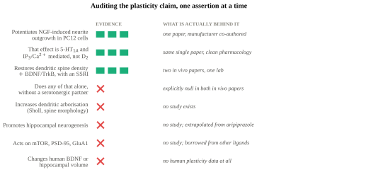
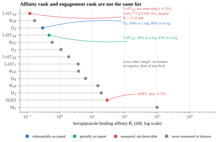
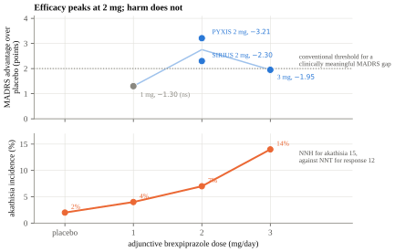
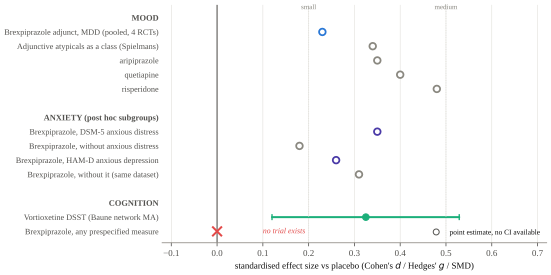
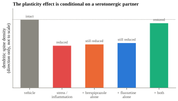
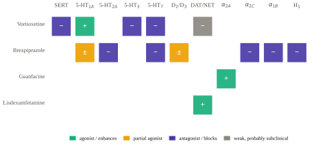

I want to separate three claims that get bundled together whenever this combination is discussed: that brexpiprazole is a plasticity drug, that its receptor profile is unusually rich, and that the two drugs are complementary. The first is weaker than advertised and rests on a single in vitro paper. The second is largely undone by occupancy data, which show that most of those sub-nanomolar affinities are not detectably engaged at clinical doses. The third is true, is the only one with a defensible mechanistic argument behind it, and is almost never the reason anyone gives. This report works through each in turn, then asks what the pair should be expected to do for cognition, for mood and for anxiety, which are three different questions with three different answers.
Section oneWhat "T-Rex" actually denotes
Almost nothing, in the evidentiary sense, and it is worth being blunt about this before anything else.
There is no published clinical trial, open-label study, case series, chart review or registry analysis of vortioxetine combined with brexpiprazole. A PubMed search for both terms returns seventeen records, every one of which is a review, a network meta-analysis or a pharmacogenomics paper mentioning the two drugs separately as alternative options. ClinicalTrials.gov has no registered trial of the combination. Brexpiprazole's own registration programme used SSRI and SNRI backbones; vortioxetine was not a permitted background antidepressant.
The nickname itself traces to two pieces by an overlapping author group: a 2025 article in American Nurse Journal (Garcia, Cotner and Spano) and a 2024 practice blog post (Garcia and Spano) containing a single anecdotal case, vortioxetine titrated 10 to 20 mg and brexpiprazole 1 to 2 mg over eight weeks. The blog cites studies of each drug individually and cites no study of the pair. I found no conference abstract, no guideline mention and no peer-reviewed use of the term.
So "T-Rex" is a name attached to a plausible pairing, not a studied regimen. That does not make it a bad pairing. It means every argument for it is a mechanistic argument, and mechanistic arguments have to be held to a standard.
Section twoThe dendrite claim, audited
The claim that brexpiprazole increases dendrite outgrowth does have a primary source, and the source is real, peer-reviewed and mechanistically careful. It is also one paper, in a tumour cell line, measuring something that is not a dendrite.
Ishima, Futamura, Ohgi, Yoshimi, Kikuchi and Hashimoto (2015, European Neuropsychopharmacology 25:505–511) showed that brexpiprazole potentiates NGF-induced neurite outgrowth in PC12 cells in a concentration-dependent manner. The pharmacological dissection is the good part. WAY-100,635, a selective 5-HT1A antagonist, blocked the effect. Raclopride, a selective D2 antagonist, did not, which explicitly rules out D2 partial agonism as the mechanism. The IP3 receptor inhibitors xestospongin C and 2-APB both blocked it, placing the effect on a 5-HT1A to IP3 to calcium pathway.
Three things about that study constrain how far it travels. PC12 is a rat adrenal chromaffin tumour line; its "neurites" are undifferentiated processes, not dendrites, and the assay measures potentiation of an NGF/TrkA response that brexpiprazole does not itself initiate. Futamura, Ohgi and Kikuchi are Otsuka scientists, and Kikuchi is the medicinal chemist behind both aripiprazole and brexpiprazole. And the full text is paywalled, so I cannot give you the tested concentrations or the magnitude of potentiation, and I am not going to invent them.

That fourth row deserves its own paragraph, because it is simultaneously the most damaging fact for the marketing version of the claim and the most interesting fact for the combination question. Ma and colleagues (2016, Scientific Reports 6:39209, social defeat stress; and 2017, Psychopharmacology 234:525–533, LPS inflammation) gave mice brexpiprazole 0.1 mg/kg, fluoxetine 10 mg/kg, or both, and measured Golgi spine density across prelimbic and infralimbic mPFC, nucleus accumbens core and shell, CA1, CA3 and dentate gyrus, plus BDNF and phospho-TrkB. The combination attenuated the stress-induced loss of spine density in mPFC, CA3 and dentate gyrus, normalised the increase in accumbens, and moved BDNF and p-TrkB in the same regional pattern, with the TrkB antagonist ANA-12 abolishing the behavioural benefit. Neither drug alone did anything.
Two honest qualifications. The brexpiprazole dose was 0.1 mg/kg, which is low, so "no effect alone" is a low-dose finding rather than a general property. And this is one laboratory, with Otsuka co-authors, in two stress models.
There is also a tension in the mechanism that I do not think can be waved away. Ishima's data have the 5-HT2A antagonist M100907 potentiating neurite outgrowth while the 5-HT2A agonist DOI did not. The best-powered structural-plasticity result in the field says the opposite: Ly and colleagues (2018, Cell Reports 23:3170–3182) found that LSD promoted dendritic arbor growth in rat cortical cultures with an EC50 of 0.409 nM and roughly doubled spine density at 24 hours, and that ketanserin, a 5-HT2A antagonist, abolished the effect. You cannot claim brexpiprazole is pro-plasticity because it blocks 5-HT2A and also accept the psychedelic plasticity literature. Different preparations and different endpoints may reconcile them, and Vargas and colleagues (2023, Science) localising the relevant 5-HT2A pool intracellularly is the most promising route, but as things stand the two literatures point opposite ways.
Finally, the class-level prior is negative, and a plasticity story has to survive it. Ho and colleagues (2011, Archives of General Psychiatry 68:128–137), following 211 first-episode patients across 674 MRI scans over a mean of 7.2 years, found higher antipsychotic dose associated with smaller total cerebral grey matter (β = −0.15, p = .005), with the highest-dose tertile losing white matter at 0.64 cm3 per year while the lowest-dose tertile gained 1.30. Dorph-Petersen (2005) and Konopaske (2007) showed the same thing in macaques with drug exposure alone. None of that is brexpiprazole-specific and low-intrinsic-activity partial agonists may behave differently, but the burden of proof sits on the drug.
What I think is actually true about brexpiprazole and plasticity
It potentiates a growth-factor response in a cell line through 5-HT1A and calcium signalling. In an animal, on its own, it does not change dendritic spines. Combined with a serotonergic antidepressant, it restores spine density and BDNF signalling that stress has taken away. That is a real and specific finding, and it is a finding about combination therapy, which is exactly the question being asked here. It is not evidence that brexpiprazole grows dendrites.
Section threeAffinity is not occupancy, and this rewrites the mechanism story
Brexpiprazole's binding table is genuinely striking: 5-HT1A 0.12 nM, α1B 0.17, D2 0.30, 5-HT2A 0.47, α2C 0.59, D3 1.1, 5-HT7 3.7, H1 19, M1 above 1000 (Maeda et al. 2014, JPET 350:589–604). Intrinsic activity is around 40 to 45 per cent at D2 against aripiprazole's 60 per cent, and about 60 per cent at 5-HT1A. On paper this is a drug that does eight things at once.
Then Girgis, Forbes, Abi-Dargham and Slifstein (2020, Neuropsychopharmacology 45:786–792) put twelve people with schizophrenia through ten days of dosing and four PET tracers, and the picture narrows sharply.

The 5-HT1A result needs care, because it is the one I lean on and the authors themselves refuse to over-read it. Their words are that in vitro data showed nanomolar affinity "whereas negligible occupancy … using [11C]CUMI-101 was observed," followed by: "it is possible that the tracer failed to detect true binding by brexpiprazole. Alternatively … it is possible that in vivo binding of brexpiprazole to 5-HT1A is less than predicted by in vitro assays." CUMI-101 is an agonist-class tracer with documented sensitivity problems. So the honest statement is not detectable with this tracer, not not engaged. For SERT the authors are more confident, and say the PET result is consistent with preclinical data showing essentially no SERT binding.
Even hedged, this reorders the mechanism story. The receptors demonstrably engaged at clinical doses are D2 and 5-HT2A. Every appealing story about 5-HT1A partial agonism, including the one Ishima nominated for the neurite effect and the one Yoshimi (2014) showed underlies the procognitive effect in PCP-treated mice, depends on a receptor we cannot currently show the drug occupies in a human at 2 mg. That is a translational gap sitting directly under the most attractive part of the pharmacology.
Section fourWhere the two drugs actually meet
| Target | Vortioxetine | Brexpiprazole | Interaction |
|---|---|---|---|
| 5-HT2A | negligible affinity | antagonist, Ki 0.47 nM, 28–45% occupied | Complementary, and the strongest argument for the pair |
| 5-HT7 | antagonist, 19 nM | antagonist, 3.7 nM | Genuine convergence, procognitive and circadian |
| 5-HT1A | agonist, 15 nM | partial agonist, 0.12 nM, occupancy undetectable | Would be a conflict if the receptor were shown to be occupied |
| 5-HT3 | antagonist, 3.7 nM | negligible | Vortioxetine's disinhibition mechanism runs uninterfered |
| SERT | inhibitor, 1.6 nM, ~80% at 20 mg | no meaningful occupancy | Vortioxetine only |
| D2/D3 | none | partial agonist, 64–80% striatal | Different compartment from vortioxetine's cortical DA rise |
| α2C / α1B | none | antagonist, 0.59 / 0.17 nM | Adds prefrontal NE and DA release |
The 5-HT2A argument is the one worth making, and I have not seen anyone make it. Vortioxetine is unusual among serotonergic antidepressants in having essentially no 5-HT2A affinity. That means the extra synaptic serotonin its SERT blockade produces arrives at 5-HT2A completely unopposed, and 5-HT2A is the receptor associated with insomnia, jitteriness, agitation, sexual dysfunction and akathisia. Brexpiprazole intercepts exactly that receptor, at exactly the occupancy range (28 to 45 per cent) where you would want partial rather than complete blockade. This is the same logic that makes mirtazapine and trazodone useful serotonergic partners, and it is the mechanism every atypical approved for adjunctive MDD shares. It is a tolerability-and-tolerated-dose argument as much as an efficacy argument: it is what lets 20 mg of vortioxetine be liveable.
5-HT7 is the cleanest additive interaction. Both drugs are antagonists, brexpiprazole the more potent. 5-HT7 antagonism is linked to procognitive, antidepressant and circadian effects, and this is the one target where the two are genuinely doing the same thing.
On 5-HT1A, receptor theory predicts a conflict that the occupancy data may have already dissolved. When a high-affinity partial agonist and a lower-affinity full agonist compete for the same receptor population, the partial agonist wins occupancy and clamps the response at its own ceiling, behaving as a functional antagonist wherever agonist tone is high. Brexpiprazole binds 5-HT1A roughly 125 times more tightly than vortioxetine, so on paper it should own that receptor and blunt both vortioxetine's direct 5-HT1A agonism and the effect of the elevated serotonin that SERT blockade produces. Two things keep this from being fatal. First, if the Girgis result reflects real biology rather than tracer failure, the competition is not happening at 2 mg. Second, even if it is, vortioxetine's 5-HT1A agonism is a minor component of its action next to SERT inhibition at 1.6 nM and 5-HT3 antagonism at 3.7 nM, and at the raphe autoreceptor a partial agonist limits the negative feedback that would otherwise suppress firing, which is the pindolol-augmentation logic and cuts in a helpful direction.
On dopamine, the compartments differ. Vortioxetine has no D2 or DAT activity; it raises prefrontal dopamine indirectly, by disinhibiting cortical pyramidal output through 5-HT3 and 5-HT7. Brexpiprazole's D2 partial agonism acts predominantly where D2 density is high, which is striatum, not cortex. A partial agonist buffers toward a set point rather than clamping to zero. So the prediction is that D2 partial agonism shapes rather than abolishes vortioxetine's cortical dopamine effect, and that the clinical readout of getting the balance wrong is akathisia rather than loss of cognitive benefit.
Section fiveMood: real, small, and dose-shaped in a way that matters
The registration programme, all Otsuka and Lundbeck sponsored, is four short-term adjunctive trials. PYXIS (Thase et al. 2015) gave a MADRS advantage of 3.21 points at 2 mg (p = .0002). SIRIUS (Hobart et al. 2018) gave 2.30 at 2 mg (p = .0074). POLARIS (Thase et al. 2015) gave 1.30 at 1 mg, which did not separate (p = .0737), and 1.95 at 3 mg (p = .0079).

That figure is, for practical purposes, the most useful thing in this report. If you are on 2 mg, you are on the dose with the best evidence, and you should be sceptical of any suggestion to go to 3 mg, because the trial that tested 3 mg found it worked less well than 2 mg did in two other trials and produced akathisia in 14 per cent of patients against 7 per cent at 2 mg.
The rest of the mood picture is honest but unflattering. Pooled across four RCTs the effect is d = 0.23 (Yoon et al. 2017), which is small. The randomised-withdrawal maintenance study failed outright: relapse 22.5 per cent on brexpiprazole against 20.6 per cent on placebo, HR 1.14 (95% CI 0.78 to 1.67), p = 0.51 (McIntyre et al. 2024). And the most recent network meta-analysis of adjunctive agents in MDD (McIntyre, Stahl, Shim et al. 2026, JAMA Psychiatry, 22 trials, 10,962 participants) ranks aripiprazole above brexpiprazole on both response (RR 1.53 versus 1.38) and acceptability (1.16 versus 1.47). The case for brexpiprazole over aripiprazole is a tolerability case, and the outcome data do not fully support even that: Kishi et al. (2020) found no significant difference between the two on akathisia, somnolence, EPS or weight gain in acute schizophrenia.

Section sixAnxiety: a real signal, a specifier that decides it, and a confound that mimics it
Mechanistically the anxiolytic story is reasonable. 5-HT1A partial agonism is the buspirone lineage. α1B antagonism at 0.17 nM is the prazosin lineage, which is why α1 blockade underpins PTSD nightmare treatment. And 5-HT2A antagonism at 28 to 45 per cent occupancy addresses precisely the serotonergic jitteriness that a 20 mg dose of vortioxetine generates unopposed. Of those three, only the last is confirmed to be engaged at clinical doses, which is worth keeping in view.
The clinical data are all post hoc. Thase et al. (2019), pooling PYXIS, POLARIS and SIRIUS, found in the DSM-5 anxious-distress subgroup a MADRS advantage of 3.00 points (95% CI 1.71 to 4.29), d = 0.35, against d = 0.18 in patients without it. That is roughly a doubling and it is the headline everyone quotes.
Here is the part that is not quoted. In the same dataset, when anxious depression was defined instead by the Hamilton anxiety/somatisation factor, the advantage was d = 0.26 with it and d = 0.31 without it. The direction reverses. A subgroup effect that appears under one definition of anxiety and vanishes under another, in the same patients, in a post hoc analysis by the sponsor, is a hypothesis rather than a finding. The absolute differences on the HAM-D anxiety factor itself were 0.5 to 0.7 points.
The prospective anxiety-spectrum evidence is the PTSD programme, and it is genuinely mixed. The phase 3 trial 071 (Davis et al. 2025, JAMA Psychiatry, n = 416) was positive, CAPS-5 advantage 5.59 points, p < 0.001. The fixed-dose phase 3 trial 072 was negative at both 2 and 3 mg. In the phase 2 full-factorial study, brexpiprazole monotherapy did not separate from placebo at all, and neither did sertraline monotherapy, which is an assay-sensitivity problem that weakens the whole design. There is no brexpiprazole trial in generalised anxiety disorder or social anxiety disorder.
The confound that matters most in practice
Akathisia's subjective component (inner restlessness, inability to settle, dysphoric tension) is close to phenomenologically identical to worsening anxiety. In adjunctive MDD it runs at 7 per cent at 2 mg and 14 per cent at 3 mg, and in the PTSD programme brexpiprazole monotherapy produced akathisia in 13.3 per cent. It typically emerges within the first one to three weeks of starting or of any dose increase, and a dose increase resets that window. A person who reports "my anxiety got worse" three weeks after a dose change is more likely experiencing akathisia than pharmacodynamic anxiogenesis, and the correct response (reduce the dose) is the opposite of the intuitive one. No trial I found reported a blinded attempt to distinguish the two.
Section sevenCognition: one half of the pair carries all of it
Vortioxetine has the cognitive data. Its DSST advantage over placebo is a weighted mean difference of 2.44 points (95% CI 1.11 to 3.77) across six RCTs and 1,782 patients, with a network meta-analytic SMD of 0.325 (95% CI 0.120 to 0.529) that makes it the only antidepressant significantly superior to placebo on that measure (Baune, Brignone and Larsen 2018). Those effects are contested and have three published nulls behind them, and the FDA declined the cognition indication, but the data exist and were prespecified.
Brexpiprazole has no such data at all. There is no prespecified, placebo-controlled trial of brexpiprazole with DSST, MCCB, BACS or CANTAB as an endpoint in any indication. What exists is three open-label uncontrolled Otsuka studies using the Cognitive and Physical Functioning Questionnaire, a self-report scale, in which cognitive complaints improved by 8 to 10 points alongside MADRS improvements of about 18 points, which is indistinguishable from mood-driven change in subjective complaint; a post hoc analysis of the PANSS "disorganised thought" Marder factor, which is a clinician-rated symptom score and not neurocognition; and a 19-patient uncontrolled 16-week pilot in schizophrenia reporting Trail Making A improvement without correction for practice effects.
The preclinical package is better and is worth stating fairly. Yoshimi et al. (2014) showed brexpiprazole 0.3 to 3 mg/kg dose-dependently reversed subchronic PCP-induced novel object recognition deficits in mice, and that WAY-100635 abolished the reversal, making the effect 5-HT1A-dependent. Yoshimi, Futamura and Hashimoto (2015) showed reversal of dizocilpine-induced social recognition deficits without sedation. Maeda et al. (2014) reported brexpiprazole outperforming aripiprazole on PCP-induced cognitive deficits. Every one of these is Otsuka-authored, and all of them run through the receptor whose human occupancy is undetectable.
Set against that, the class-level evidence is unfavourable. Feber et al. (2024, JAMA Psychiatry, 68 RCTs, 9,525 participants) concluded that antipsychotics are not procognitive drugs and that no individual antipsychotic could be recommended for cognitive symptoms. And Oomen et al. (2026, Psychological Medicine), in 278 remitted first-episode psychosis patients, found estimated D2 receptor occupancy negatively associated with global cognition (β = −0.18), verbal fluency (−0.22) and attention and processing speed (−0.17), all p < 0.003. That occupancy was modelled from drug and dose rather than measured by PET, and the study is cross-sectional, so it is a correlation with a plausible direction rather than a demonstration. But it points the same way as the meta-analysis.
My read on the cognitive question
The cognitive rationale for this combination belongs entirely to vortioxetine. Brexpiprazole contributes mood-symptom benefit, tolerability of the serotonergic load, and a possible cognitive tax through D2 occupancy and mild sedation. At 2 mg the tax is likely small. The honest framing is that brexpiprazole is not part of the procognitive argument; it is part of what lets the procognitive drug be dosed at 20 mg without the serotonergic side of it becoming intolerable.
Section eightWhat I actually think the combination is doing
Here is the argument I would make for this pair, using only things that have primary support.

The only demonstrated structural-plasticity effect of brexpiprazole is a conditional one that requires a serotonergic partner and appears only in a brain that stress has already damaged. That is not a weakness of the combination argument. It is the combination argument, and it is the one piece of evidence that is specifically about pairs of drugs rather than about either drug alone.
Now add the second observation. If the effect requires a serotonergic partner, then which partner should matter, and vortioxetine is a better candidate than fluoxetine on exactly the axis being measured. Vortioxetine enhances hippocampal LTP (154 ± 9 per cent against 125 ± 7 per cent for vehicle, p = 0.0017, where escitalopram gave 127 ± 5 per cent), increases GluA1 phosphorylation at the Ser845 site that controls AMPA receptor surface delivery without changing total GluA1, and promotes dendritic spine maturation in hippocampal culture in a way not seen with duloxetine (Dale et al. 2014; Waller et al. 2016, 2017). Fluoxetine, the partner actually used in the Ma experiments, has none of that specific profile. So the prediction is that if the Ma result generalises, vortioxetine should be a stronger partner than the SSRI it was demonstrated with, not a weaker one.
Third, the tolerability logic runs the other way and is just as important. Vortioxetine leaves 5-HT2A unopposed; brexpiprazole covers it at partial occupancy. That is what makes the 20 mg dose, which is where vortioxetine's SERT occupancy reaches about 80 per cent and where the DSST data are strongest, sustainable rather than merely tolerable.
The falsifiable version
- In the Ma paradigm, substituting vortioxetine for fluoxetine should produce a larger restoration of spine density and BDNF/TrkB signalling than the SSRI did, because vortioxetine has its own LTP and GluA1-Ser845 effects. If it produces the same or less, the partner is fungible and the story is generic serotonergic tone.
- Brexpiprazole should not add to vortioxetine's DSST effect, because it has no procognitive mechanism that has been shown to be engaged in a human. If a trial found an additive cognitive effect, the 5-HT1A occupancy question would need reopening with a better tracer.
- The combination's anxiety benefit should track 5-HT2A occupancy, not 5-HT1A, and should therefore appear early and not increase further above 2 mg.
- Any apparent anxiety worsening in the first three weeks, or after a dose increase, should respond to lowering the brexpiprazole dose. If it does not, it was not akathisia.
Section nineThe four-agent picture
Nobody takes this combination in isolation, and the interesting pharmacology is at the edges.

The α2C and α2A distinction is the one worth understanding, and it is usually got wrong. α2A makes up roughly 90 per cent of CNS α2 receptors and engages at high noradrenergic tone; guanfacine's benefit is a postsynaptic action on the dendritic spines of prefrontal pyramidal cells, inhibiting cAMP and closing HCN channels near the synapse to strengthen network connectivity for working memory (Wang et al. 2007; Arnsten). α2C is about 10 per cent, concentrated in striatum, hippocampus and cortex, has higher affinity for noradrenaline, and operates as a brake at low noradrenergic tone. Blocking α2C releases that brake and raises extracellular noradrenaline and dopamine in prefrontal cortex (Uys, Shahid and Harvey 2017). So an α2C antagonist and an α2A agonist are complementary rather than contradictory: one increases the presynaptic supply, the other makes the postsynaptic spine machinery better at converting it into persistent firing. The caveat is that brexpiprazole is not perfectly α2C-selective, its α2A affinity is reported around 15 nM against 0.59 at α2C, and I could not verify that ratio against the primary supplementary table, so treat the selectivity claim as reported rather than confirmed.
The stimulant interaction is a real tension. D2 partial agonism buffers dopaminergic signalling toward a set point, which is precisely the signal a stimulant is supplying. There are no controlled data on brexpiprazole combined with lisdexamfetamine, and lisdexamfetamine's own record as an MDD augmentation agent is mixed to negative: Madhoo et al. (2014) was positive for executive dysfunction after remission (BRIEF-A global executive composite difference 8.0 points, p = 0.0009), but the two phase 3 adjunctive trials failed and the programme was discontinued.
The pharmacokinetics are reassuring about the pair and unforgiving about a third agent. Neither vortioxetine nor brexpiprazole inhibits or induces CYP2D6, so they do not interact with each other. But both are CYP2D6 substrates, which means one patient variable moves both at once. A CYP2D6 poor metaboliser needs vortioxetine capped at 10 mg and brexpiprazole halved. Adding a strong CYP2D6 inhibitor does the same thing: bupropion 150 mg twice daily raises vortioxetine AUC 2.3-fold, and quinidine raises brexpiprazole AUC by 94 per cent. Bupropion is one of the most commonly added third agents in treatment-resistant depression, and adding it here raises both drugs simultaneously. Brexpiprazole's 91-hour half-life means any such error takes roughly two weeks to become fully visible.
Bipolar spectrum is the largest evidence gap. Both phase 3 trials of brexpiprazole in bipolar I mania failed to separate from placebo on YMRS at week three (Otsuka and Lundbeck, February 2019). The bipolar depression trials have no published results. The theoretical appeal of D2 partial agonism providing anti-switch cover for a serotonergic antidepressant is reasonable and completely untested, and there is no data at all in mixed features or soft-bipolar presentations.
| Claim | Confidence | What it rests on |
|---|---|---|
| Brexpiprazole potentiates neurite outgrowth in a cell line via 5-HT1A and IP3/Ca2+ | Moderate | One paper, Otsuka co-authored, magnitudes unpublished |
| Brexpiprazole increases dendrite outgrowth in a brain | Low | No study; the in vivo monotherapy result is null |
| Brexpiprazole plus a serotonergic drug restores stress-reduced spine density and BDNF | Moderate | Two in vivo papers, one lab, low dose (0.1 mg/kg) |
| 5-HT2A coverage is the strongest rationale for the pair | High, as mechanism | Occupancy measured at 28–45%; vortioxetine has no 5-HT2A affinity |
| 5-HT7 convergence is real | High | Both antagonists, label affinities |
| Brexpiprazole's 5-HT1A actions are clinically engaged | Unresolved | <5% with [11C]CUMI-101; authors name tracer failure as an alternative |
| Adjunctive brexpiprazole helps mood | Moderate, small (d 0.23) | 4 RCTs; maintenance trial failed; ranked below aripiprazole |
| 2 mg is the right dose | High | 3 mg less effective and twice the akathisia |
| Anxiety benefit in anxious distress | Low | Post hoc; reverses under a different anxiety definition |
| Brexpiprazole contributes to cognition | Low | No prespecified trial exists in any indication |
| The pair is safe from mutual PK interaction | High | Neither inhibits or induces CYP2D6 |
| Anything about this pair in bipolar spectrum | No evidence | Both mania trials failed; no mixed-features data |
The dendrite story is one assay in a tumour cell line, and it should be retired from the argument. What should replace it is stranger and better: the only time anyone has watched brexpiprazole change a dendritic spine, it needed a serotonergic partner to do it, and that is precisely the question this combination asks.
Sources
Brexpiprazole pharmacology and occupancy. Maeda K, Sugino H, Akazawa H, et al., J Pharmacol Exp Ther 350:589, 2014 (Brexpiprazole I); Maeda K, Lerdrup L, Sugino H, et al., J Pharmacol Exp Ther 350:605, 2014 (Brexpiprazole II); Girgis RR, Forbes A, Abi-Dargham A, Slifstein M, Neuropsychopharmacology 45:786, 2020; Wong DF, et al., Eur J Clin Pharmacol 77:355, 2021; Stahl SM, CNS Spectr 21:1, 2016; Kikuchi T, et al., Neuropsychopharmacol Rep, 2021; FDA Rexulti prescribing information, 2023; EMA RXULTI EPAR and SmPC.
Plasticity. Ishima T, Futamura T, Ohgi Y, Yoshimi N, Kikuchi T, Hashimoto K, Eur Neuropsychopharmacol 25:505, 2015; Ma M, Ren Q, Yang C, et al., Sci Rep 6:39209, 2016; Ma M, Ren Q, Yang C, et al., Psychopharmacology 234:525, 2017; Ma M, Ren Q, Fujita Y, et al., Psychopharmacology 234:3165, 2017; Björkholm C, et al., Eur Neuropsychopharmacol 27:411, 2017; Ishima T, Iyo M, Hashimoto K, Transl Psychiatry 2:e170, 2012; Chikama K, et al., Brain Res 1676:77, 2017; Ly C, Greb AC, Cameron LP, et al., Cell Rep 23:3170, 2018; Vargas MV, et al., Science, 2023; Santarelli L, et al., Science 301:805, 2003; Yanpallewar SU, et al., J Neurosci 30:1096, 2010; Ho BC, Andreasen NC, Ziebell S, et al., Arch Gen Psychiatry 68:128, 2011; Dorph-Petersen KA, et al., Neuropsychopharmacology 30:1649, 2005; Konopaske GT, et al., Neuropsychopharmacology 32:1216, 2007.
Mood and anxiety trials. Thase ME, Youakim JM, Skuban A, et al., J Clin Psychiatry 76:1224, 2015 (PYXIS); Thase ME, et al., J Clin Psychiatry 76:1232, 2015 (POLARIS); Hobart M, Skuban A, Zhang P, et al., J Clin Psychiatry 79:17m12058, 2018 (SIRIUS); Yoon S, et al., J Clin Psychopharmacol, 2017; McIntyre RS, et al., Acta Neuropsychiatr 37:e33, 2024; McIntyre RS, Stahl SM, Shim SR, et al., JAMA Psychiatry, 2026; Nelson JC, Papakostas GI, Am J Psychiatry 166:980, 2009; Spielmans GI, et al., PLoS Med 10:e1001403, 2013; Zhou X, et al., Int J Neuropsychopharmacol 18:pyv060, 2015; Citrome L, Int J Clin Pract, 2015; Kishi T, et al., Psychopharmacology 237:1459, 2020; Thase ME, et al., Neuropsychiatr Dis Treat 15:37, 2019; McIntyre RS, et al., J Clin Psychopharmacol, 2024; Davis LL, et al., JAMA Psychiatry, 2025 (PTSD 071); Hobart M, et al., J Clin Psychiatry, 2025 (PTSD phase 2); Otsuka and Lundbeck press release, bipolar I mania phase 3, 15 February 2019.
Cognition. Yoshimi N, et al., Pharmacol Biochem Behav, 2014; Yoshimi N, Futamura T, Hashimoto K, Eur Neuropsychopharmacol, 2015; Marder SR, et al., Schizophr Bull Open 2:sgab014, 2021; Shimizu/Kamei et al., Heliyon 11(17), 2025; Feber L, et al., JAMA Psychiatry, 2024; Oomen PP, Gangadin SS, de Haan L, et al., Psychol Med 56:e5, 2026; Baune BT, Brignone M, Larsen KG, IJNP 21:97, 2018; IJNP 25:969, 2022; Dale E, et al., J Psychopharmacol 28:891, 2014; Waller JA, et al., Neuropharmacology, 2016; Waller JA, et al., J Psychopharmacol 31:365, 2017.
Combination, adrenergic and pharmacokinetics. Garcia G, Cotner C, Spano R, American Nurse Journal, 5 May 2025; Garcia G, Spano R, collabpsych.com, 18 August 2024; Chen G, Lee R, Højer AM, et al., Clin Drug Investig 33:727, 2013; Chen G, Højer AM, Areberg J, Nomikos G, Clin Pharmacokinet 57:673, 2018; TRINTELLIX US prescribing information; EMA Brintellix SmPC; Uys MM, Shahid M, Harvey BH, Front Psychiatry 8:144, 2017; Wang M, et al., Cell 129:397, 2007; Madhoo M, et al., Neuropsychopharmacology 39:1388, 2014; Richards C, et al., 2016.
This page is a mechanistic audit, not clinical advice. Every numerical claim was checked against a primary source before publication, and the places where a primary source could not be reached are named in the text.